Главная / Эрол Елдыр. Потерянная Башня. 2018
<Параллельный авто-перевод блока об истингах
из ежегодника «Потерянная Башня» («Yitik Kule», № 2018, с. 180—207)>
|
AVAR KÖYLERİNDE TESPİT EDİLMİŞ ÇEÇEN TARZINDA ÜRETİLMİŞ BAZI İSTİNG ÖRNEKLERİ |
НЕКОТОРЫЕ ПРИМЕРЫ ПРОИЗВОДСТВА В ЧЕЧЕНСКОМ СТИЛЕ, ОБНАРУЖЕННЫЕ В АВАРСКИХ ДЕРЕВНЯХ |
SÖZLÜ TARİH / ANI |
УСТНАЯ ИСТОРИЯ / МОМЕНТ |
”İSTİNG” |
”ИСТИНГ” |
BİR KİTABIN HİKAYESİ |
ИСТОРИЯ КНИГИ |
EROL YILDIR |
ЭРОЛ ЕЛДЫР |
|
Bazen bir kitabın yazım süreci ve basımı, tıpkı bir insan gibi maceralarla dolu çeşitli oluşum evreleri geçirerek kendi çapında bir “var” olabilme mücadelesine sahne olabiliyor. Mütevaziliği bir kenara bırakarak söylememiz gerekirse, 1865li yıllarda Daymohk’tan ayrılışımızdan günümüze kadar geçen 150 yılı aşkın bir süre içinde Çeçen kültür değerleri hakkında üretilmiş en önemli eserlerin başında gelen “İSTİNG/Çeçen-İnguş Halkının Keçe Sanatı” adlı kitabımız da işte böyle bir mücadele sonucu basılarak var olabildi. Bu noktada müsaadenize sığınarak kitabımızın oluşum sürecini bir tür anı notlan halinde anlatacağım. |
Иногда процесс написания и печати книги может быть сценой борьбы за «существование» сам по себе, проходя через различные этапы становления, полные приключений, точно так же, как человек. Если отбросить скромность, наша книга «ИСТИНГ / Войлочное искусство чечено-ингушского народа», которая является одним из самых важных произведений о чеченских культурных ценностях за более чем 150 лет после нашего отъезда из Даймохка в 1865 году, является результатом такой борьбы. может существовать при нажатии. Здесь с вашего разрешения я расскажу о процессе формирования нашей книги как своего рода воспоминания. |
|
Çocukluğum, babamın memuriyeti dolayısıyla kendi akrabalarım ve köyümden çok uzaklarda geçtiğinden Çeçen asıllı olduğumu bilmem dışında kültürel değerler, özellikle de “Çeçen Keçeleri” hakkında hiçbir bilgiye sahip değildim. Ta ki 1985 yılına kadar. O yıl Ankara Gazi Üniversitesinde Resim ve Sanat Tarihi alanında Yüksek Lisans eğitimime devam ediyordum. Kendime, üzerinde araştırma yapacak tez konulan araştırıyordum. Bir gün Cebeci’deki evime orta okul ve yatılı Öğretmen lisesi yıllarından yakın arkadaşım rahmetli Medet Ünlü (inşallah şehit) geldi. Gerçekte sevgili Medet, benim kültürümüz hakkında çalışmamı çok arzuluyordu. Bu nedenle tez konusu olarak İsting’leri araştırmamı tavsiye etti. Böylesi renkli bir el sanatının varlığı hakkında hiçbir kaynakta bilgiye rastlamamıştım, şaşırmıştım ve konu çok ilgimi çekmişti. Bu ilk bilgiyi Ankara’da yaşayan başka akrabalarımla da konuştuğumda, bana bu keçelerin “eskiden yapıldığını ve birbirinin aynı örnekler olduğu”nu söylemeleri dışında bir yardımları olmadı. |
Поскольку мое детство ушло от моих родственников и моей деревни из-за офиса отца, я ничего не знал о культурных ценностях, особенно о «чеченских войлоках», кроме того, что знал, что я чеченец. До 1985 г. В том году я продолжал учиться на магистратуре по живописи и истории искусств в Университете Анкары Гази. Я искал диссертацию, чтобы исследовать себя. Однажды мой близкий друг Медет Юнлю (надеюсь, мученик) пришел ко мне домой в Дебечи, в среднюю школу и учитель-интернат в средней школе. Действительно, дорогой Медет очень хотел, чтобы я изучал нашу культуру. По этой причине он посоветовал мне изучить тему Истинга как диссертацию. Ни в одном источнике не нашла сведений о существовании такого красочного изделия кустарного промысла, я был удивлен, и эта тема привлекла мое внимание. Когда я говорил об этой первой информации с другими родственниками, живущими в Анкаре, они мне не помогли, за исключением того, что они сказали мне, что эти коврики были «сделаны в прошлом и являются теми же примерами». |
|
Ancak merakımı gidermek için o yaz köyde öncelikle yakın akrabalarımın evlerinde bulunan örnekleri tespit ederek kataloglama çalışmalarına başladım. Daha sonra rahmetli arkadaşım Necdet Berkhan, Abdulkadir Türk, akrabam Yalçın Özden, amca ve kuzenlerimin yardımlarıyla Çardak, Küçük-su (Behlöyl), Sisne ve Göksün merkezde ev ev dolaşarak keçe örneklerinin slide (renkli dia) ve fotoğraflarını çektim. Çalışmalarım ilerledikçe söylenenlerin aksine bu evlerde asılı ata-nine yadigarı isting örneklerinin birbirlerine benzer olmalarına karşılık her birinin farklı renklerden ve motiflerden oluştuğunu şaşkınlıkla tespit ettim. Derleme süreci daha sonra Türkiye’de diğer şehir ve köylerde de devam ederek aralıklarla yıllarca devam edecekti. |
Однако, чтобы удовлетворить свое любопытство, я сначала начал каталогизировать образцы, найденные тем летом в домах моих близких родственников в деревне. Позже, с помощью моего покойного друга Недждета Беркхана, Абдулкадира Тюрка, моего родственника Ялчина Оздена, моего дяди и двоюродных братьев, я ходил от дома к дому в Чардаке, Кучук-су (Бехлёйл), Сисне и Гёксюн, и делал слайды (цветные слайды) и фотографировал слайды. По мере развития моих работ я с удивлением обнаружил, что, хотя образцы семейных реликвий девяти предков, висящие в этих домах, похожи друг на друга, каждый состоит из разных цветов и мотивов. Затем процесс компиляции будет продолжаться с интервалом в несколько лет и продолжаться в других городах и деревнях Турции. |
|
Bu arada İsting’ler hakkında yüksek lisans tezi hazırlama fikrimi hocalarıma bir türlü kabul ettirememiştim. Bana, hiç ilgi alanıma girmediği halde “Kahramanmaraş Yöresi Türk İşleme Sanatı” adlı tez çalışmasını vermişlerdi. Ancak hiçbir çaba karşılıksız kalmıyor, her araştırma ve çalışmanın mutlaka bir getirisi de oluyor. Ben de bu tez çalışması için öğrendiğim araştırma metodolojisini, paralelinde kendi merakımı gidermek üzere yaptığım İsting araştırmalarına da uyguluyordum. |
Между прочим, я не мог убедить своих профессоров принять мою идею о подготовке магистерской диссертации об Истинге. Мне вручили диссертацию на тему «Турецкое искусство обработки Кахраманмараша», хотя меня это не интересовало. Однако ни одно усилие не остается без внимания, и каждое исследование определенно окупается. Я также применял исследовательскую методологию, которую изучил для этой диссертации, параллельно с исследованиями Истинга, которые я проводил для удовлетворения собственного любопытства. |
|
İsting katalogunu oluşturma süreci ise gerçekte çok zor ve maddi külfetli yüksek bir çaba gerektiriyordu. Öncelikle farklı köy ve kasabalarda bulunan örneklere ulaşmak için o zamanlarda pek kolay olmayan bir şekilde araç kiralamak gerekiyordu. Konaklama ve ulaşım ise gerçekte çok masraf gerektiren bir durumdu. Gittiğimiz köylerde ise insanlara ayrıca yaptığımız çalışmanın amacını konunun önemini anlatarak akıllarındaki farklı şüpheleri gidermek oldukça zorlu bir çaba gerektiriyordu. Ayrıca bu örneklerin asılı olduğu odalara özellikle evin hanımları türlü nedenlerle girmemi istemiyorlardı. Girdiğim odalarda ise duvara asılı keçelerin fotoğraflarını çekebilmem mekanın genellikle karanlık ve darolmasından dolayı pek verimli olmuyordu. Örneklerin tespiti için en uygun yol olan keçeyi açık havaya çıkararak çekim yapmama ise birkaç aile dışında kimse izin vermemişti. Odalarda zorunlu olarak yapılan detay çekimleri gerçek renklerin ve motiflerin bütün olarak tespitini bir hayli zorlaştırıyordu. Bu tür zorluklara bir de keçe sahiplerinin duygusal ve kişisel yaklaşımları eklenince ancak azimli ve tutkulu merak sonucu aşılabilecek zorlu bir araştırma süreci gerçekleşiyordu. Her keçe için ayrı ayrı, kim tarafından, hangi tarihte yapıldığı, kimin evinde hangi tarihte tespit edildiği, boyutları, kompozisyon ve teknik özellikleri gibi bilgilerin yer aldığı bir gözlem fişi hazırlıyordum. Gördüğüm tüm örnekleri (o yıllarda şimdiki gibi kayıt ve bilgisayar çizim imkanı olmadığından) yurt dışına gönderek “tab” ettirdiğim slide ve fotoğraflardan yararlanarak karşılaştırıyor, orijinal renklerine sadık kalarak guaş boya ile çizimlerini yaparak katalogluyordum. Örnekler çoğaldıkça merakım bir tutku halini almaya başlamıştı. |
С другой стороны, процесс создания каталога Истинга потребовал очень сложных и дорогостоящих усилий. Прежде всего, нужно было арендовать автомобиль, чтобы добраться до примеров в разных деревнях и городах, что в то время было непросто. Размещение и транспорт на самом деле были очень дорогой ситуацией. В деревнях, которые мы посетили, требовалось очень трудное усилие, чтобы развеять различные сомнения в их умах, объясняя важность предмета людям, которых мы сделали. Кроме того, особенно хозяйки дома не хотели, чтобы я входил в комнаты, где висели эти образцы. В комнатах, в которые я вошел, для меня было не очень эффективно фотографировать войлок на стене, потому что пространство в целом было темным и узким. За исключением нескольких семей, мне никто не разрешал снимать, вынося войлок на улицу, что является наиболее удобным способом обнаружения образцов. Обязательная детальная съемка в комнатах сильно затрудняла определение истинных цветов и мотивов в целом. Добавление эмоционального и личного подхода владельцев войлока к этим проблемам было сложным исследовательским процессом, который можно было преодолеть только с помощью решительного и страстного любопытства. Я готовил лист наблюдений для каждого сукна, который включал такую информацию, как кем, в какой день он был изготовлен, в какой день он был идентифицирован в чьем доме, размеры, состав и технические характеристики. Я отправлял все образцы, которые видел (так как в те годы не было оборудования для записи и компьютерного рисования), используя слайды и фотографии, которые я свел в таблицы, и каталогизировал их, рисуя их гуашью, сохраняя верность исходным цветам. По мере того, как количество примеров увеличивалось, мое любопытство начало превращаться в страсть. |
|
Tüm bu çabalarım sadece Çeçen köylerinde değil çevrede bulunan Kafkas kökenli özellikle de Avar (Marulaal) köylerinde de devam etti. Bu köylerde yapılan ve çeçen keçeleriyle benzer özellikler taşıyan orijinal örnekleri de toparlayarak “Anadolu’da Üretilen Kafkas Keçe Sanatı” konusu etrafında çeşitli dergilerde makalelerim yayınlanmaya başladı. |
Все эти усилия продолжались не только в чеченских селах, но и в окрестных селах кавказского происхождения, особенно в Аварском (Марулаал). Собирая оригинальные образцы, сделанные в этих деревнях, по характеристикам напоминающие чеченский войлок, мои статьи начали публиковаться в различных журналах, посвященных теме «Кавказское войлочное искусство, сделанное в Анатолии». |
|
Çalışmalarım 1994 yılında bir kitap haline gelmiş bulunmaktaydı. Ben de o yıllarda Bakanlığın Hukuk Danışmanı da olan sevgili hocamız Prof.Dr. Anıl Çeçen’in yardımıyla TC.Kültür Bakanlığı Yayınlar dairesine kitabın yayınlanması için başvurarak bir örneğini bıraktım. Araya askerlik dönemim girdi. 1996 başında askerden döndüğümde iki yıl geçmesine rağmen bakanlıktan hala bir yanıt alamamıştım. Bakanlıkta çalışan bir öğrencimin kişisel çabasıyla yapılan bir araştırmada kitabın yayın incelemesi yapılmadan sümen altında unutulduğu (!?) ortaya çıktı. Kitabı tekrar elden geçirerek basım için yeniden başvurduğumda ise çok geçmeden olumsuz yanıt aldım. Kitabımın iadesinde, gönderilen inceleme raporunda haklı olduğunu gördüğüm bazı biçim ve teknik kritikler yanında “eserde Türkçe olmayan çok kelimenin yer aldığı”, “Katalogda verilen örneklerin birbirine çok benzediği gibi” gerekçeler de yer alıyordu. Verilen mesajı almıştım..! Daha sonraki dönemlerde Kültür Bakanlığına ve hiçbir resmi kuruma bir daha yeni bir başvuru yapmadım. Bu arada inceleme raporunda yapılan eleştirileri göz önüne alarak teknik konular doğrultusunda kitabı yeniden elden geçirdim. Çok benzeyen örnekleri ayıklayarak başlangıçta 130 olan örnek sayısını 100 e düşürdüm. “Freehand” programında kitabı yayına hazır hale getirerek uygun bir yayıncı beklemeye başladım. |
Моя работа превратилась в книгу в 1994 году. Мой дорогой профессор, профессор. С помощью Анил Чечен я обратился в Департамент публикаций Министерства культуры с просьбой о публикации книги и оставил копию. Вмешалась моя военная служба. Когда я вернулся из армии в начале 1996 года, я все еще не получил ответа от министерства через два года. В ходе исследования, проведенного личными усилиями студента, работающего в Министерстве, выяснилось, что книга была забыта (!?) Под ковриком без просмотра публикации. Когда я тщательно пересмотрел книгу и снова подал заявку на публикацию, я вскоре получил отрицательный ответ. В ответе на мою книгу, помимо некоторых формальных и технических критических замечаний, которые я считал правильными в присланном отчете об обзоре, были также такие причины, как «работа содержит много нетурецких слов», «Примеры, приведенные в каталоге, очень похожи друг на друга». Я получил сообщение ..! В последующие периоды я больше не обращался в Министерство культуры или какое-либо официальное учреждение. Тем временем я переработал книгу в соответствии с техническими проблемами, учитывая критику, высказанную в отчете об обзоре. Удалив очень похожие сэмплы, я уменьшил количество сэмплов со 130 до 100 вначале. Подготовив книгу к публикации в программе «От руки», я стал ждать подходящего издателя. |
|
Bu bekleyiş, beraberinde büyük bir yılgınlığı da ortaya çıkarmasına karşılık, arkadaş ve dostların yardımıyla sonuçsuz kalan birkaç sponsor arayışı ve baskı denemesiyle yıllarca devam etti. Bu arada kitabın yayımı için Çeçenya'daki Çeçen Kültür Bakanına ve ilgili yetkililerine başvuruma da olumlu bir yanıt alamamıştım. Üstelik bu çabamdan dolayı türlü suçlamalarla karşılaştığımın da bilinmesini isterim. |
Это ожидание продолжалось годами, с помощью друзей и друзей, а также с несколькими безуспешными поисками спонсоров и попытками прессы, хотя это принесло большое разочарование. Кстати, на свое обращение к министру культуры Чечни и соответствующим должностным лицам в Чечне с просьбой о публикации книги я не получил положительного ответа. Более того, я хотел бы, чтобы было известно, что я столкнулся с различными обвинениями в связи с этим. |
|
2015 yılı başında, kitabın yayımı için yaşadıklarımı ilk başından beri yakından takip eden sevgili Selman Beştoy'un yoğun çabalarıyla bu ümitsiz bekleyiş bir anda son buldu. Arkadaşımın bulduğu bazı sponsorların desteğiyle, kitabı yeni düzeltmelerle tekrar kurgulayarak İstanbul'da o yıl kurulan Kafkas İnguş Derneğinin ilk yayını olarak kaliteli bir şekilde 1250 adet bastırdık. |
В начале 2015 года это безнадежное ожидание подошло к концу благодаря напряженным усилиям дорогого Селмана Бештой, который с самого начала внимательно следил за моим опытом публикации книги. При поддержке спонсоров, которых нашла моя подруга, мы восстановили книгу с новыми редакциями и напечатали 1250 экземпляров в высоком качестве, что стало первым изданием Ассоциации кавказских ингушей, учрежденной в том же году в Стамбуле. |
|
Sonuçta, |
В конце концов, |
|
İsting Sanatı'nın artık bilinmezliğin eşiğinden alınarak en azından literatürde kendisine yer bulup, bilgi alemine aktarılmış olması, kitabımızın yayımı için gösterilen ve yıllara yayılan tüm çabaların yorgunluğunu da ortadan kaldırmıştı.. |
Тот факт, что Искусство Истинга было взято с края неизведанного и перенесено в сферу знания, по крайней мере, в литературу, снял усталость от всех усилий, приложенных для публикации нашей книги за эти годы. |
AVAR KÖYLERİNDE TESPİT EDİLMİŞ ÇEÇEN TARZINDA ÜRETİLMİŞ BAZI İSTİNG ÖRNEKLERİ |
НЕКОТОРЫЕ ПРИМЕРЫ ПРОИЗВОДСТВА В ЧЕЧЕНСКОМ СТИЛЕ, ОБНАРУЖЕННЫЕ В АВАРСКИХ ДЕРЕВНЯХ |
|
Keçeler üzerine yaptığımız araştırmaları sadece Çeçen yerleşimlerinde değil, bu yerleşimlere oldukça yakın olan Avar (Maarulal) köylerinde de yapmış ve 20 adet civarında (Avarca BURTİNA denilen ) keçe örneği tespit etmiştik. Bu keçelerin bazıları ya Çeçenlerle yapılan evlilikler ve kurulan akrabalık ilişkileri sonucunda Çeçen gelinleri tarafından getirilmiş ya da Çeçen kayınvalidelerce o köylerde üretilmişti. Gerçekte Avarlar da usta bir keçe üretici toplumdur. Ancak, Dağıstan’da üretilen keçelerle Türkiye’de üretilenler keçeler özellikle motiflerin biçimi açısından birbirlerine hiç benzemezler. Kireçköy ve Ortatepe Avar köylerinde tespit ettiğimiz tüm keçeler Çeçen Keçeleriyle aynı biçimsel özelliklere sahiptirler. Burada “ilk kez sunduğumuz” aşağıda yer alan örnekler İSTİNG kitabımızda yer vermediğimiz, bu tür Çeçen tarzında yapılmış keçelerdir. |
Мы провели исследование войлока не только в чеченских поселениях, но и в селах Авар (Маарулал), которые находятся очень близко к этим поселениям, и нашли около 20 образцов войлока (так называемые аварские буртины). Некоторые из этих войлоков были либо привезены чеченскими невестами в результате брака и установления родственных отношений с чеченцами, либо произведены в этих селах чеченской свекровью. Фактически, аварцы также являются мастером производства войлока. Однако те, которые производятся в Турции, с войлочными печатями, произведенными в Дагестане, не похожи ни на какие другие с точки зрения их особой формы мотивов. Все войлоки, которые мы нашли в селах Киречкей и Ортатепе-Авар, имеют те же формальные черты, что и чеченские войлоки. Приведенные ниже примеры, которые мы «представляем впервые» здесь, сделаны в чеченском стиле, который мы не включили в нашу книгу ISTING. |
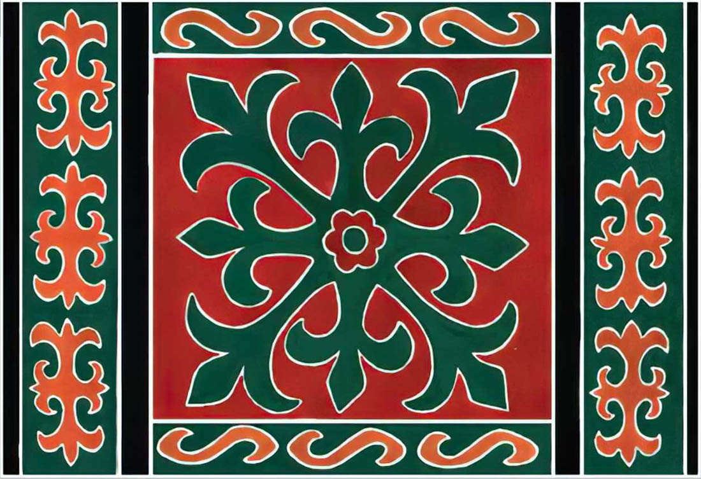
|
1 Göksün, Kireç Köyü/ Harun Yıldız’a aittir/ 1962 yılında Naciye Yıldız tarafından yapılmıştır / 175 x 300 cm boyutlanndadır / 27.07.1988 tarihindeki saha araştırmalarında tespit edilmiştir. |
1 Гёксюн принадлежит деревне Киреч / Харун Йылдыз / Построен в 1962 году Нацие Йылдыз / Размер 175 х 300 см / Обнаружен во время полевых исследований 27.07.1988. |
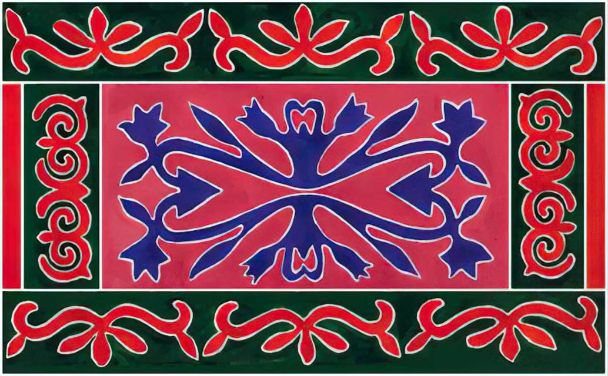
|
2 Göksün merkez / Haci Polat’a aittir/ 1962 yılında Haci Polat tarafından yapılmıştır /140 x 240 cm boyutlanndadır/ 28.07.1988 tarihindeki saha araşbrmalannda tespit edilmiştir. |
2 Центр Гёксюн / принадлежит Хаджи Полату / Построен Хаджи Полатом в 1962 году / имеет размер 140 х 240 см / Обнаружен при полевых исследованиях 28.07.1988. |
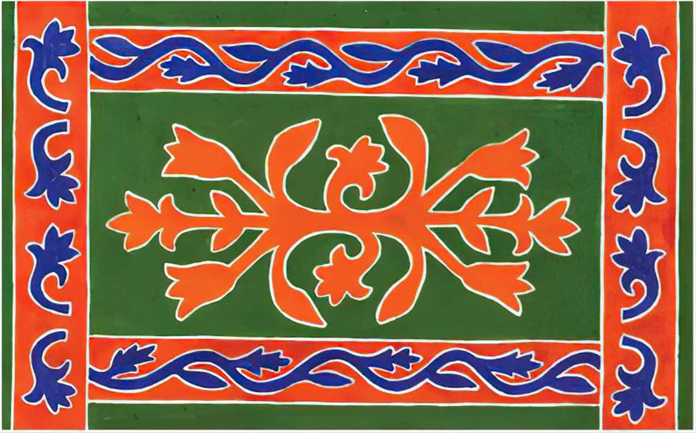
|
3 Göksün, Kireç Köyü/ Hayrullah Canbulat’a aittir / 1963 yılında Kadriye Canbulat, Havva ve Keli-met YILDIZ tarafından yapılmıştır. 175 x 300 cm boyutlanndadır. 27.07.1988 tarihindeki saha araştırmalarında tespit edilmiştir. |
3 Гёксюн принадлежит деревне Киреч / Хайрулла Канбулат / Построен в 1963 году Кадрие Канбулат, Хавва и Кели-мет ЙИЛДИЗ. Его размер 175 х 300 см. Обнаружен при полевых исследованиях 27.07.1988. |
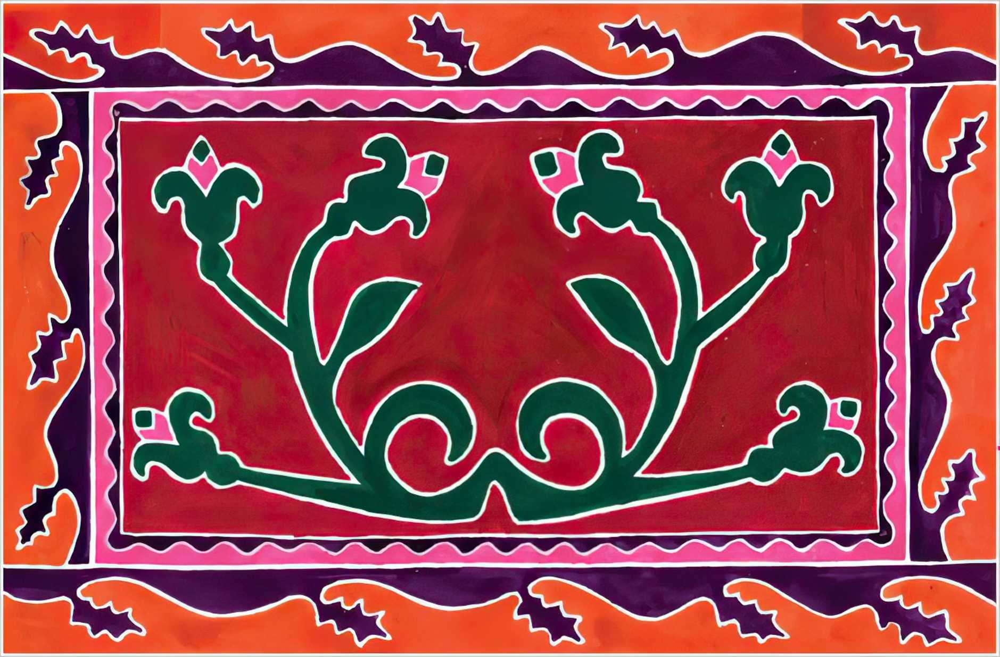
|
4 Göksün, Kireç Köyü/ Salih Canbulat’a aittir/ 1957 yılında Hatice Polat tarafından yapılmıştır. 162 x 262 cm boyutlanndadır. 27.07.1988 tarihindeki saha araştırmalarında tespit edilmiştir. |
4 Гёксюн, деревня Киреч / принадлежит Салиху Канбулату / Построен в 1957 году Хатидже Полатом. Его размеры 162 х 262 см. Обнаружен при полевых исследованиях 27.07.1988. |
EL SANATLARI |
РУКОВОДСТВО |
ŞELH İSTİNG |
ПАРНЫЙ ИСТИНГ |
İKİZ İSTİNG KARDEŞLİĞİ |
ИСТИНГИ БЛИЗНЕЦЫ-БРАТЬЯ |
|
Çeçen kadınları İsting üretimi sırasında bazı ilginç ve pratik uygulamalar da yapmaktaydı. Buna göre; iki farklı renkteki keçe üzerine çizdikleri “aynı bustumu” dişili erkekli olarak yer değiştirerek aynı anda iki keçe yapıyorlardı. |
Чеченские женщины также находили интересные и практические применения во время производства «Истинга». Согласно этому; Они делали два войлока одновременно, меняя «тот же бустум», который они рисовали на войлоке двух разных цветов, женского и мужского. |
|
Genelde merkezi ana kompozisyonda yaptıkları bu değişimi, bazı durumlarda keçeyi çepeçevre kuşatan “KERT” adı verilen çeşitli kalınlıklardaki bordürlerde de uyguluyorlardı. |
Это изменение, которое они обычно вносили в центральную основную композицию, также было применено к границам различной толщины, называемым «КЕРТ», которые в некоторых случаях окружают войлок со всех сторон. |
|
Böylece birbirleriyle büstüm aynılığı ama karşılıklı renk değişimi olan iki ayrı keçe, aynı anda pratik birşekilde üretilmiş oluyordu. Anneler, bu tür “Şelh İsting” leri genellikle evden ayrılırken çocuklarına hatıra olarak vermek üzere üretiyorlardı. Çeçen istinglerinde sıkça uygulanan bu yöntem, gerçekte bustumların özel ve kişisel anlamlara sahip olmasından kaynaklanıyor, bu sayede çocuklar aynı motiflerin yer aldığı keçelere sahip oluyorlardı. |
Таким образом, практически одновременно производились два разных войлока с взаимным изменением цвета, но с однородностью бюстума между собой. Матери обычно изготавливали такие ”шелх истинги”, чтобы дарить детям сувениры, когда они выходят из дома. Этот метод, который часто используется в чеченских историях, на самом деле проистекает из того факта, что бустумы имеют особое и личное значение, поэтому дети чувствовали те же мотивы. |
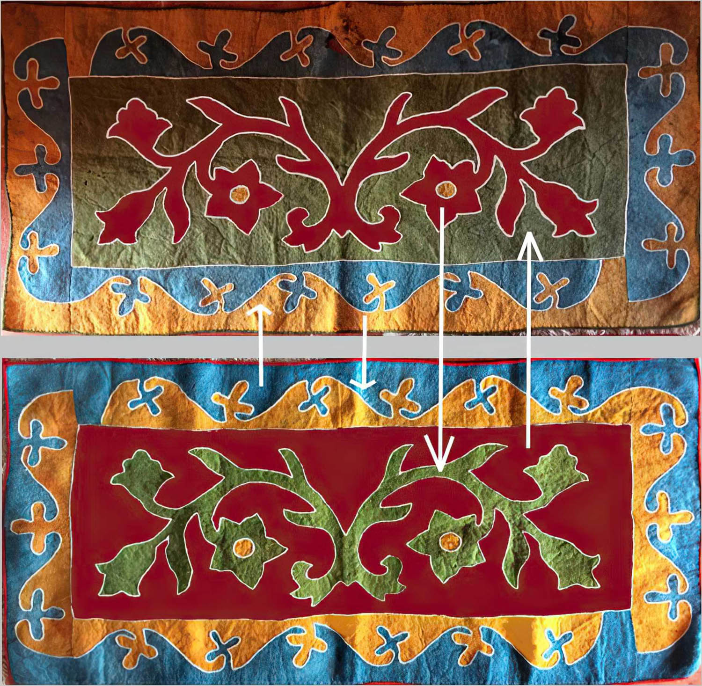
|
Burada verdiğimiz ikiz keçeler (Şelh isting) 1990 yılında Halrt Yıldır tarafından yapılan örneklerdir ve sanatçının Fethiye’deki özel koleksiyonundadır. |
Приведенные здесь парные войлоки (Şelh isting) являются образцами, изготовленными Халртом Йылдыром в 1990 году и находятся в частной коллекции художника в Фетхие. |
EL SANATLARI SERGİSİ |
ВЫСТАВКА РУКОВОДСТВА |
İSTİNGİ YAŞATMAK |
ИСТИНГ ВЫЖИЛ |
TÜRKİYE'DE ÇEÇEN KEÇESİNİ YENİDEN ÜRETENLER |
ВОССОЗДАНИЕ ЧЕЧЕНСКОГО ВОЙЛОКА В ТУРЦИИ |
HALİT YILDIR |
ХАЛИТ ЙИЛДИР |
|
Yanlış hatırlamıyorsam 1985 yılı idi. Çardak’ta rahmetli Kesire (Polat) ninemin annesinden kendisine kalmış eski bir isting’i tamir edişini hayranlıkla izliyordum. Ninem, istingi tamamen söktükten sonra bazı güve yemiş yerleri örerek kapatmış, zamanla kirlenip beyazlığını kaybetmiş çimçırg şeritleri yıkayarak keçenin tüm parçalarını onarıyordu. O yaşlı elleriyle istingi oluşturan bustum-ları ve kertleri orijinal bir yöntemle yeniden çift taraftan dikerek onarmasının nedeni bu keçeyi kıymetini bileceğimden emin olduğu için bana hediye etmek istemesinden kaynaklanıyordu. |
Если я правильно помню, это был 1985 год. Я наблюдал, как моя покойная бабушка Кесире (Полат) ремонтировала в Чардаке старую квартиру от своей матери. Моя бабушка после того, как полностью удалила ткань, покрывала изъеденные молью участки вязанием, мыла полоски травы, которые со временем становились грязными и теряли белизну, и ремонтировала все части войлока. Причина, по которой он отремонтировал бустумы и коронки, которые сформировали вещь, своими старыми руками, сшив их с обеих сторон оригинальным методом, заключалась в том, что он хотел показать мне этот войлок, поскольку он был уверен, что я оценил его ценность. |
|
Ninemin keçeyi onarımı sırasında bana öğrettiği otantik dikiş yöntemi ve motifleme bilgisi daha sonra içimde bu istinglerden yeniden üretme arzusu ve isteği uyandırdı. |
Аутентичный метод шитья и знания мотивов, которым меня научила бабушка, ремонтируя войлок, позже пробудили желание и желание воспроизвести эти вещи. |
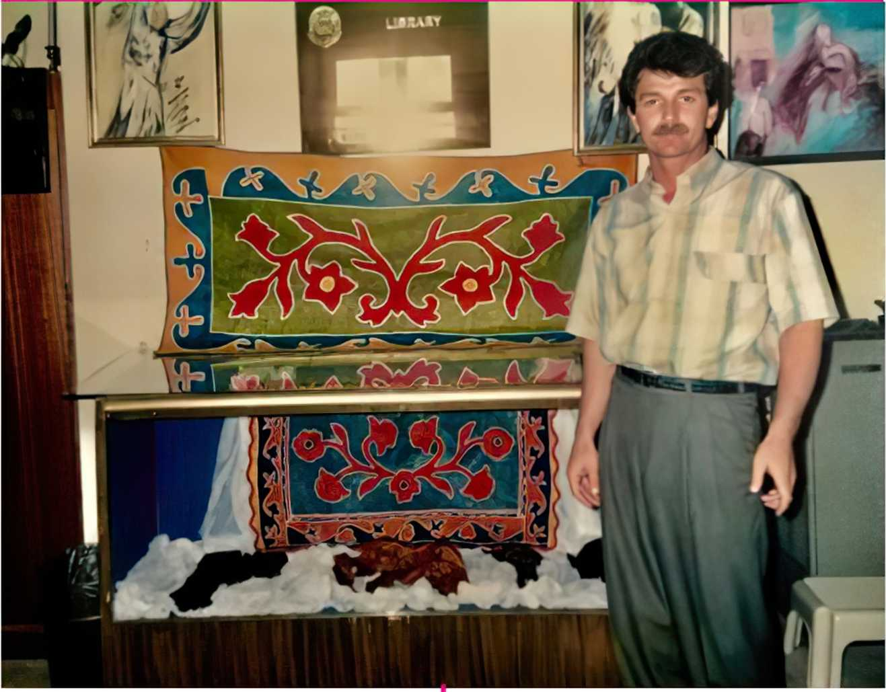
|
BİR İSTİNG SERGİSİ ÜZERİNE |
НА ДЕЙСТВУЮЩЕЙ ВЫСТАВКЕ |
|
Böylece 1998 yılında Resim Öğretmeni olarak görev yaptığım Adana’da, Kafkas Derneğinden Ka-bardey arkadaşım Göksal Kandemir hanımla birlikte küçük bir atölye kurarak ilk girişimlere başladık. Öncelikle istingin temel malzemesi olan işlenmemiş keçeleri Ankara Samanpazarı atölyelerinden temin ettik. Renklendirmede kullanacağımız doğal boyaları ise Kadirli Karatepe’de (şimdiki adıyla Kızyu-suflu köyü) kurulan boya atölyelerinden aldıktan sonra o yıllarda artık tamamen unutulmuş olan el sanatımızın mevcut örneklerini 70 x 100 cm gibi küçük boyutlarda yeniden üretmeye başladık. Aynı zamanda keçe aplikelerle süslediğimiz deri çantalar da ürettiğimiz çalışmalar arasında yer alıyordu. |
Таким образом, мы начали первые попытки с создания небольшой мастерской с моим другом Ка-бардей Гексалом Кандемиром из Кавказской ассоциации в Адане, где я работал учителем искусств в 1998 году. Прежде всего, мы закупили необработанный войлок, который является основным материалом для текстиля, из мастерских Анкары Саманпазары. Приобретя натуральные красители, которые мы будем использовать для окрашивания, в мастерских по окраске, созданных в Кадирли Каратепе (ныне известная как деревня Кызю-Суфлу), мы начали воспроизводить существующие образцы нашего ремесла, которые были полностью забыты в те годы, в небольших размерах, таких как 70 x 100 см. В то же время среди произведенных нами работ были кожаные сумки, которые мы украсили аппликациями из фетра. |
|
1991 yılı başında tüm üretimlerimizden seçtiğimiz deri çanta ve isting’leri yeniden kamuoyuna tanıtmak amacıyla sergilemeye karar verdik. Böylece, o yıllarda Konya’da Selçuk Üniversitesi öğretim üyesi olan ve istingler üzerine araştırmalar yapan kuzenim Erol Yıldır’ın da Dia gösterili bir söyleşi ile katıldığı proğramla Adana Sabancı Kültür Merkezinde Türkiye’deki ilk İsting Sergisini açtık. Oldukça ilgi gören keçe sergisini daha sonra Ankara Sıhhiye’de bulunan Kafkas Kültür Derneği salonunda da tekrarladık. İstingler üzerine yaptığımız sergi ve tanıtım çalışmaları TRT Çukurova Radyosunda yaptığımız söyleşi ile devam etti. |
В начале 1991 года мы решили выставить кожаные сумки и аксессуары, которые мы выбрали из всей нашей продукции, чтобы снова представить их публике. Итак, кто в те годы, члены факультета Сельчукского университета в Конье и мой двоюродный брат, который изучал Эрол в годы программы Дианы с Аданой Сабанджи, присоединились к иллюстрированному интервью, мы открыли первую выставку Истинга в Турции в Культурном центре. Позже мы повторили выставку войлока, которая привлекла большое внимание, в зале Кавказской культурной ассоциации в Анкаре Сыххие. Наша выставочная и рекламная деятельность на фестивалях продолжилась интервью, которое мы дали на TRT ukurova Radio. |
|
Daha sonra kuzenim Erol Yıldır ile ilk kez gittiğimiz Çeçenya’da bu el sanatımızı Çeçen bilim insanlarına anlatma fırsatı da yakaladık. Grozniy TV ‘de yaptığımız söyleşilerle bu tanıtım çalışmaları devam etti.. |
Позже, в Чечне, куда мы впервые приехали с моим двоюродным братом Эролом Йылдыром, у нас была возможность рассказать об этом ремесле чеченским ученым. Продолжением этой рекламной деятельности стали интервью, которые мы дали на Грозном ТВ. |
|
Şimdi, aradan geçen yılların ardından o sergiye vesile olan Kesire ninemi rahmetle ve minnetle anıyorum. |
Теперь я с милосердием и благодарностью вспоминаю свою бабушку Кесире, которая по прошествии многих лет сыграла важную роль в этой выставке. |
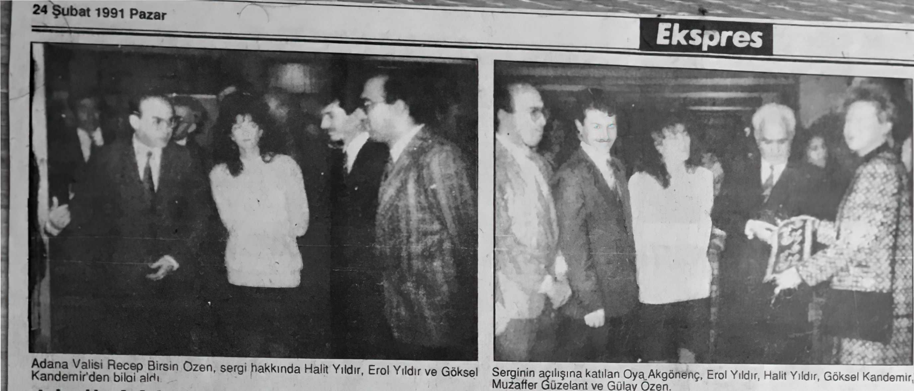
Halit Yıldır, ve Göksel Kandemir tarafından gerçekleştirildi |
Проводят Халит Елдыр и Гёксель Кандемир |
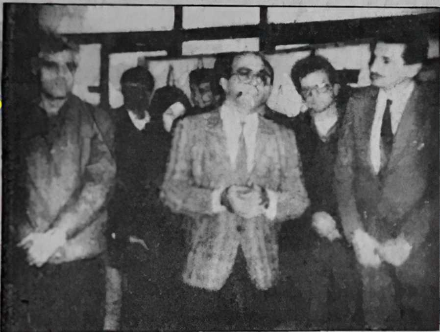
|
Selçuk Üniversitesi Yardımcı Doçentlerinden Erol Yıldır, Isting konusunda açıklamalarda bulundu. |
Эрол Елдыр, доцент Сельчукского университета, сделал заявления об Истинге. |
|
Nurgül ÇELEBİDĞLU |
Нургюль ЧЕЛЕБИДУЛУ |
|
Adana Hact Ömer Sabancı Kültür Sitesi'nde açılan Türkiye’nin ilk isting sergisi Vali Recep Bîrsin Ozen'in eşi Gülay Özen tarafından izlenime açıldı. |
- Открытие Audio Adana Ömer Sabancı Культурная достопримечательность Открытие первой выставки в Турции произвела впечатление жена губернатора Реджепа Биер Озена Озена Гулай. |
|
Halit Yıldır ve Göksel Kandemir tarafından gerçekleştirilen ve 1 Mart 1991 tarihine kadar izlenime açık olan sergide 77 eser yer aldı. Bu eserlerden 2’si en az bir asırlık bir geçmişe sahip olan orijinal isting, 8'i de daha sonra sanatçılar tarafından aslına sadık kalınarak yapılan isting ve 67 tane de mask ve çantalardan oluşan deri eşya bulunuyordu. |
Выставка, организованная Халитом Йылдыром и Гёкселем Кандемиром и открытая для просмотра до 1 марта 1991 года, представила 77 работ. Из них 2 были оригинальными и имели не менее столетнюю историю, 8 были выполнены художниками добросовестно, а 67 были кожаными изделиями, состоящими из масок и сумок. |
|
Serginin açılış konuşmasını yapan Gülay Özen, ”Böyle güzel bir serginin açılış onurunun bana verilmesinden gurur duyuyorum. Huzurunuzda her iki sanatçı arkadaşımıza da çalışmalarında başarılar diliyorum” dedi. |
Выступая на открытии выставки, Гюлай Озен сказал: «Я горжусь тем, что мне была оказана честь открытия такой красивой выставки. Желаю успехов обоим нашим друзьям-художникам в вашем присутствии», — сказал он. |
|
Açılışa işlerinin yoğunluğu nedeniyle biraz geç katılan Adana Valisi Recep Birsin Özen de sergideki eserler hakkında bilgi alarak sanatçılara çalışmalarında başan ve süreklilik diledi. |
Губернатор Аданы Реджеп Бирсин Озен, который немного опоздал на открытие из-за напряженной работы, также получил информацию о работах на выставке и пожелал художникам успехов и преемственности в их работе. |
|
İsting konusunda açıklamalarda bulunan Selçuk Üniversitesi Yardımcı Doçentlerinden Erol Yıldır da serginin ön hazırlık aşamasında Halit Yıldır ve Göksel Kandemir ile birlikte araştırma çalış malan yaptığını belirterek. ”Aslı Çeçence olan isting sözcüğünün Türkçemizde tam karşılığı olmamakla birlikte, renklendirilerek desenler verilmiş duvar keçesi olarak tercüme edi-lebielir. Motifli, renkli Kafkas keçeleri Anadolu'da yaşayan ve Otokton Kafkas halklarından olan Çeçen ve Dağıştanlılar tarafından yapılmaktadır. Bu sergide kullanılan Geç-me-İnkniste tekniği sadece keçe uygulaması olarak Kafkas sanatına özgüdür” dedi. |
Доцент Сельчукского университета Эрол Йылдыр, который сделал заявление об Истинге, заявил, что он проводил исследования с Халитом Йылдыром и Гёкселем Кандемиром на этапе подготовки выставки. «Хотя слово isting, родом из чеченского, не имеет точного эквивалента в нашем турецком, оно переводится как войлок с узорами. Мотив, красочные кавказские войлоки созданы чеченцами и дагестанцами, которые проживают в Анатолии и относятся к числу коренных кавказских народов. «Техника позднего уклонения, использованная на этой выставке, уникальна для кавказского искусства только в качестве войлока. |
|
Sergiyi açan sanatçılardan Halit Yıldır ise. sergi konusunda şunları söyledi |
Халит Елдыр, один из художников, открывших выставку. О выставке он сказал следующее. |
|
”Türkiye'ye bundan 125 yıl önce Çerkezler beraberlerinde Kafkas motiflerini de getirmişler. Kullanılmadığı için unutulmaya başlamış olan Kafkas motiflerini biz tüçülterek eserlere geçiriyoruz” dedi. |
«Черкесы в Турции 125 лет назад, что Кавказ объединили мотивы. «В своих работах мы используем кавказские мотивы, о которых начали забывать, потому что они не используются. |
|
Sergiye Adana Valisi Recep Birsin Özen ve eşi Gülay Özen, Seyhan Kaymakamı Muzaffer Güzelant ve çok sayıda izleyici katıldı. |
Губернатор Аданы Реджеп Бирсин Озен и его жена Гюлай Озен, губернатор района Сейхан Музаффер Гюзелант и многие зрители посетили выставку. |
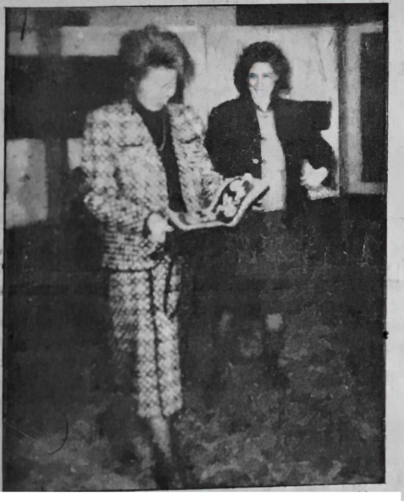
|
Adana’da açılan Türkiye’nin ilk isting sergisini Oya Akg-önenç ve Gülay Özen de ilgi ile izlediler. |
Первую выставку Турции в Истинге в Адане открыл Акгюн Ойа-Оненч и с интересом наблюдал за Гулай Озен. |
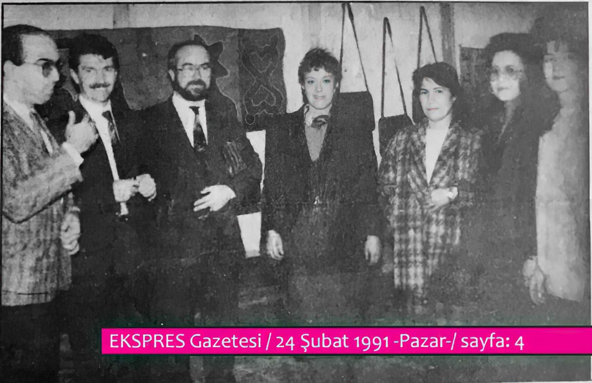
|
Erol Y.ldır. Halit Yıldır Oğuz Baylok ve Muzayyen Baytok sergide biraradaydilar |
Erol Y.ldır. Халит Йылдыр Огуз Байлок и Музайен Байток были вместе на выставке. |
İSTİNGİ YAŞATAN USTALAR |
МАСТЕРА, ОЖИВЛЯЮЩИЕ ИСТИНГИ |
|
Son yıllarda Türkiye'de yaşayan Çeçenlerin İs-ting (keçe) üretimini yeniden canlandırmaya yönelik bazı girişimlerde bulundukları gözlemlenmektedir. Bu ustalarımızdan ilki Göksün Çardak'ta yaşayan ve keçe üretimini yeniden canlandıran Remziye Yıldır(73)'dır. Aldığı küçük destek kredisiyle bu işe başlamıştır. Halen sipariş usulü İsting ütretimine devam etmektedir. Yapmış olduğu çalışmaları hakkında son yıllarda yerel basında da çeşitli haberler çıkmaktadır. |
У чеченцев, проживающих в Турции в последнее время Истинг (войлок) наблюдается, что некоторые инициативы направлены на возрождение своего производства. Первой из этих мастеров является Ремзие Йылдыр (73 года), которая живет в Гёксюн-Чардак и воссоздает производство войлока. Она начала это дело с полученной ею небольшой поддержки. Она по-прежнему продолжает производство Истинга на заказ. В последние годы в местной прессе появлялись различные сообщения о ее работе. |
|
Keçe üretimini yeniden başlatan ikinci ustamız ise Ankara'da yaşayan Çardak kökenli Zeynep Akdoğan (67) dır. Kendisine ait terzi atölyesinde deneme mahiyetinde özgün keçe örnekleri yapmaktadır. İki ustamız da talep halinde keçe üretimine devam etmeyi düşünmektedirler. |
Наш второй мастер, который возобновил производство войлока, — Зейнеп Акдоган (67 лет) из Чардака, которая живет в Анкаре. Образцы оригинального войлока она изготавливает в собственной ателье по пошиву одежды. Оба наших мастера рассматривают возможность продолжения производства войлока под заказ. |
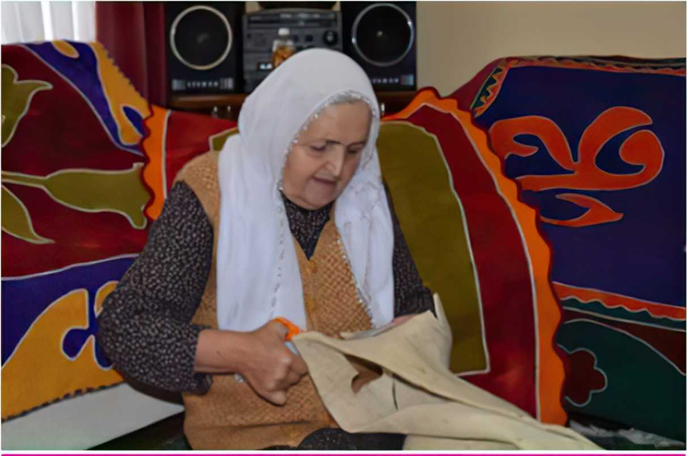
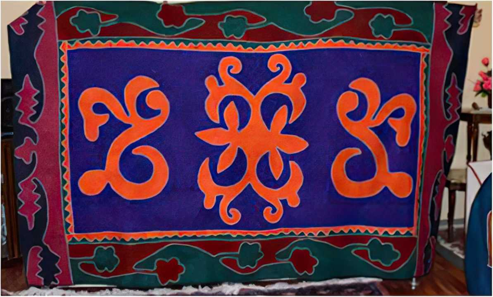
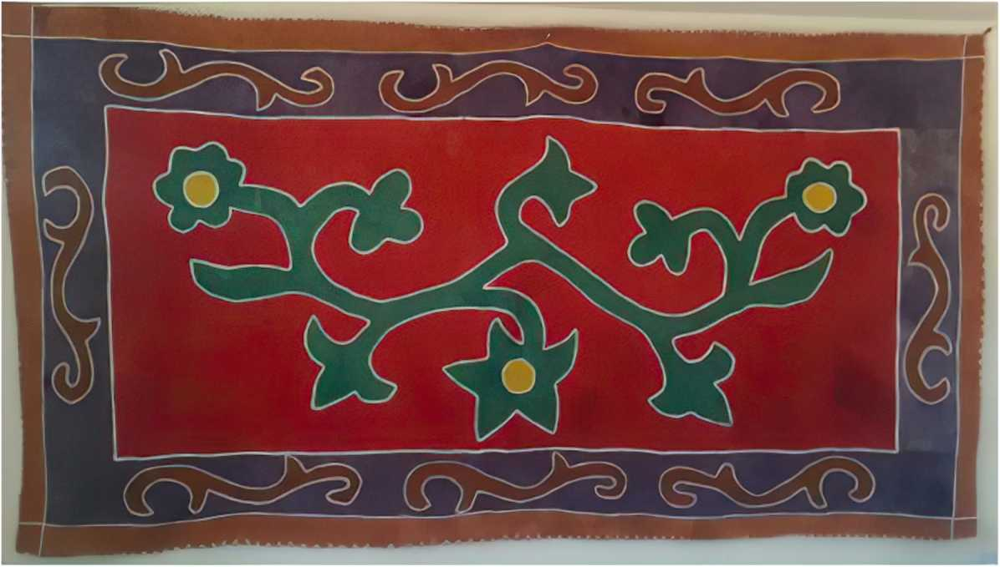
|
REMZİYE YILDIR (Remziye Yıldır'ın yaptığı keçe örnekleri) |
REMZİYE YILDIR (Образцы войлока, сделанные Ремзие Йылдыр) |
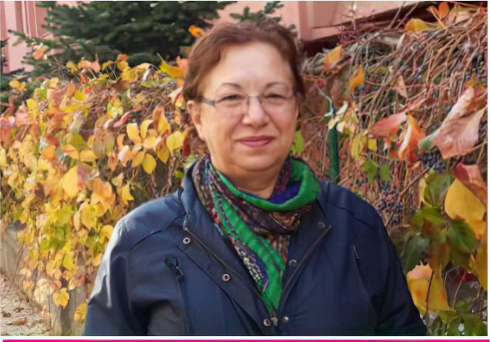
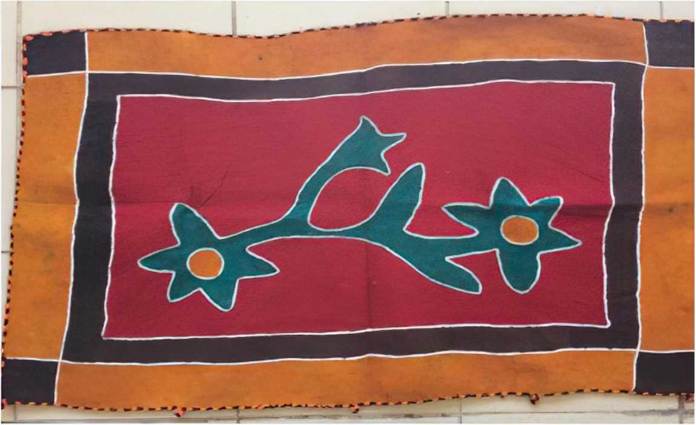
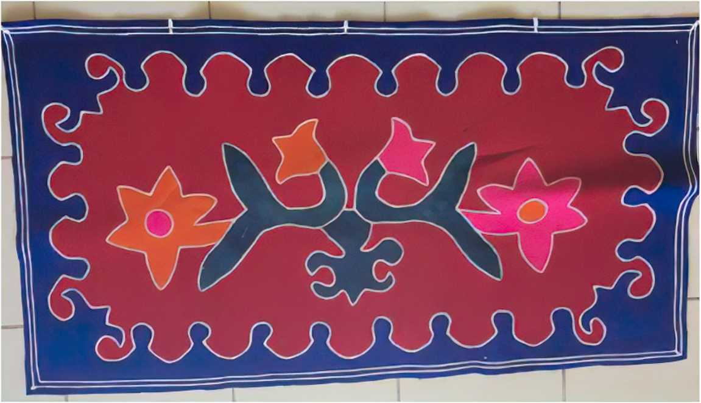
|
ZEYNEP AKDOĞAN (Zeynep Akdoğan'ın yaptığı keçe örnekleri) |
ЗЕЙНЕП АКДОГАН (Образцы войлока Зейнеп Акдоган) |
EL SANATLARI |
РУКОВОДСТВО |
BÜSTÜMÜŞ |
БУСТУМУШ |
ÇEÇEN MOTİFLERİ ÜZERİNE ANALİZ VE TASARIMLAR |
АНАЛИЗ И ДИЗАЙН ЧЕЧЕНСКИХ МОТИВОВ |
EROL YILDIR |
ЭРОЛ ЕЛДЫР |
|
İnsanlar tabiatta karşılaştıkları, duyu organlarınca algıladıkları nesneleri veya zihinlerinde hayal gücü ile tasarladıkları imgeleri çok çeşitli yollardan birtakım biçimsel şekillere dökerek görünür ve duyulur hale getirirler. Bu, söylenmek istenileni çarpıcı bir anlatımla veya kişisel betimlemeyle biçimlendirme yollan genel anlamda adına el sanatı dediğimiz bir süreci de ortaya çıkarır. İlk çağlardan günümüze temel bir davranış şekli olarak gelişen ve “sanatsal bir yaratım” sürecinde oluşan üretimlerin kendi yaşam çevresinde uygulanmasıyla insan hayatına, düşüncelerine türlü anlamlar katan ve onu güzelleştiren çok çeşitli tarzlar, uygulama alanları ve araçlar oluşmuştur. El Sanatlarının aynı zamanda toplumdan topluma değişim gösteren türlü yollarından birisi de herhangi bir zemin veya yüzey üzerinde, çoğu zaman tekrarlanarak bir bezeme oluşturan adına motif dediğimiz biçimsel-süsleyici görsel öğelerdir. |
Люди трансформируют объекты, с которыми они сталкиваются в природе, воспринимают их органами чувств, или образы, которые они создают с помощью воображения в своем сознании, в различные формальные формы, делая их видимыми и слышимыми. Это также раскрывает процесс, который мы обычно называем ремеслом, в способах формирования того, что должно быть сказано в ярком выражении или личном описании. Широкое разнообразие стилей, областей применения и инструментов, которые добавляют различные значения человеческой жизни и мыслям и делают их красивыми, были сформированы путем применения произведений, которые развивались как основная форма поведения с раннего возраста до наших дней и в процессе ”художественного творчества” в их собственной среде обитания. Один из способов ремесла, который также варьируется от общества к обществу, — это формально-орнаментальные визуальные элементы, которые мы называем мотивами, которые часто многократно образуют украшение на любом основании или поверхности. |
|
Çoğunlukla anonim bir şekilde oluşan, toplum-ların kabul ve beğenilerine göre şekillenen motifler aynı zamanda toplumdan topluma farklılık gösteren biçimsel bir yapıya da sahiptir. Her şeyden önce içinde yaşanılan coğrafya, tabiat, görsel çevre, mitoloji, sosyal hayat şekilleri, türlü inanç şekilleri gibi kültürel değerler motiflerin oluşumunu besleyen temel kaynaklardır. Motifleri biçimsel bir yapıya kavuşturan bu temel kaynakların her toplum için değişken olması bu farklılığın da başlıca nedenini oluşturur. Diğer bir deyişle yaşanılan coğrafyanın farklılığı ve bu temelde oluşan kültürel oluşumlar motiflerin özgün bir yapıya kavuşarak toplumsal bir kimliğe ya da aidiyet içeren biçimsel simgelere dönüşmesinin de başlıca nedenidir. |
Мотивы, которые в основном формируются анонимно и формируются в соответствии с принятием и вкусом обществ, также имеют формальную структуру, которая различается от общества к обществу. Прежде всего, культурные ценности, такие как география, природа, визуальная среда, мифология, социальный образ жизни и различные формы верований, являются основными источниками, питающими формирование мотивов. Основная причина этого различия заключается в том, что эти основные источники, придающие мотивам формальную структуру, различны для каждого общества. Другими словами, различие в географии, в которой мы живем, и культурных формациях, сформированных на этой основе, являются основными причинами, по которым мотивы приобретают уникальную структуру и превращаются в социальную идентичность или формальные символы, содержащие принадлежность. |
|
Çeçenlerin “BÜSTÜM” dedikleri motifleri bu oluşum nedenlerini de göz önünde bulundurarak analiz ettiğimizde bazı temel biçimsel öğelere sahip olduğunu görürüz. |
Когда мы анализируем мотивы, которые чеченцы называют «БУСТУМ» по этим причинам, мы видим, что они имеют некоторые базовые формальные элементы. |
|
Buna göre öncelikle bustumların tabiat ve görsel çevreden esinlenerek oluşturulduğu gözlemlenir. Doğal çevrede yaşayan bitki ve hayvanların gözlemlenmesi sonucu betimlenen stilize edilmiş dallar, kuşlar, geyik ve boğa boynuzları, anlamı çoktan unutulmuş olan mitolojik simge ve piktogramlar bustumların başlıca konularını oluşturur. Bakıldığında kendisine ait özgün ve farklı biçimsel bir tarzı olan bustumların nerede ise tamamı “simetrik” çeşitlemelerle yapılmıştır. İlkel çağlardan itibaren sıkça karşımıza çıkan simetrik anlayışın bu denli yaygın olarak kullanılması, motiflerin çizimi sırasında şekillendirmenin “katlama” tekniği ile yapılmış olmasından kaynaklandığı düşünülebilir. |
Соответственно, наблюдается, что бустумы вдохновлены природой и визуальной средой. Стилизованные ветви, птицы, оленьи рога и бычьи рога, изображенные в результате наблюдения за растениями и животными, живущими в естественной среде, мифологические символы и пиктограммы, значение которых давно забыто, являются основными сюжетами бюстумов. Если посмотреть, почти все бустумы, которые имеют уникальный и разный стилистический стиль, сделаны с «симметричными» вариациями. Можно предположить, что широкое использование симметричного понимания, с которым мы сталкиваемся с первобытных веков, связано с техникой «складывания» форм во время рисования мотивов. |
|
Özellikle istinglerde kullanılan Çeçen bustumlan, örneklerine daha çok Dağıstan'da rastladığımız arabesk ve değişken kalınlıktaki grift çizgilerden farklı olarak, motifin kendi içerisinde bir bütün olacak şekilde aynı kalınlığa sahiptir. Çeçen halkının süslemeden daha ziyade işlevselliğe önem vererek ortaya koydukları bu biçimsel farklılık, bilinen tarihleri boyunca en azından yüzyıllara dayanan yaşadıkları savaş ve sürgünlerle refaha eremeden kesintiye uğrayan, dayanışma içerisindeki klan ve ailelerin birbirlerine çok benzeyen, refah düzeyini bir türlü oluşturamadıkları “adeta diken üzerinde savunma halinde bekleyerek” geçen zorlu yaşam koşullarının sonucunda oluşmuş olmalıdır. Çeçen motiflerinin, bir anlamda fazla incelikli olmayan “kaba” diyebileceğimiz şekilleriyle, yapım kolaylığı açısından da tercih edilerek, toplumsal bir beğeni ile yaygınlaşmış birbirlerine benzer çeşitlemelerden olmasının başlıca nedenini de, bu zorlu yaşam koşullarına bağlayabiliriz. |
Чеченские бюстумы, которые используются, в основном, в оформлении, имеют одинаковую толщину, в отличие от арабесков и серых линий переменной толщины, примеры которых чаще всего встречаются в Дагестане, так что мотив представляет собой единое целое. Это формальное различие, которое чеченский народ выдвигает, придавая значение функциональности, а не украшениям, прерывается без процветания войнами и изгнаниями на протяжении по крайней мере столетий на протяжении всей их известной истории, кланы и семьи в солидарности очень похожи друг на друга, они не могут установить свой уровень процветания. он, должно быть, образовался в результате тяжелых условий жизни, которые прошли в ожидании» Мы можем объяснить основную причину, по которой чеченские мотивы являются одной из подобных вариаций, получивших широкое распространение с социальной оценкой, с их формами, которые мы можем назвать «грубыми», но которые в некотором смысле не слишком тонки для простоты построения. |
BÜSTÜMÜN PEŞİNDEN KOŞMAK..! |
СЛЕДУЮЩИЙ ЗА МОИМ БЮСТУМОМ ..! |
|
Günümüzde Çeçen kültürü ve sanatı üzerine yeterince yapılmış araştırma ve yayın olmadığı için bu topluma ait ulaşılabilen tüm kaynakların ve tali denilebilecek bütün dokümanların dikkatlice incelenilerek (adeta iğne ile kuyu kazılarak) analiz edilmesi ve sonuçlarının ortaya konulması büyük bir önem ve önceliğe sahiptir. Aslında günümüz dünyasının teknolojik gelişmeleri sonucunda oluşan sanal ortamlar ve paylaşımlar, bu tür materyallerin elde edilmesini kolaylaştırmakta ve araştırmacılara sınırsız imkanlar sunabilmektedir. Burada vereceğimiz birkaç analiz bu konuda yapılacak çalışmaların oluşumuna bir örnek teşkil edebillir. |
Поскольку сегодня не хватает исследований и публикаций по чеченской культуре и искусству, очень важно и приоритетно тщательно изучить и проанализировать все доступные ресурсы и все второстепенные документы, принадлежащие этому обществу (почти копая колодец иголкой) и представить результаты. Фактически, виртуальные среды и общие ресурсы, сформированные в результате технологических достижений современного мира, облегчают приобретение таких материалов и открывают неограниченные возможности для исследователей. Немногочисленные анализы, которые мы здесь дадим, могут служить примером для формирования исследований по этой теме. |
|
İlk çalışma, 1944 yılında yaşanan büyük sürgün sonucu muhtemelen Kazakistan'da yaşamak zorunda kalan Gazikov ailesine ait bir fotoğraftan elde edilmiştir. Buna göre Rüstem YAKHİKHANOV'a ait sanal bir ortamda tespit edilen ve 1951-52 yıllarında çekildiği belirtilen basılı bir kaynakta yer alan fotoğrafın fonundaki “ist-ing” motifi yeniden kültür dünyasına kazandırılmıştır. Motifin fotoğraf içindeki eğik ekseni bilgisayar ortamında yeniden düzenlenerek simetrik özelliğinden de yararlanılarak çizilmiş ve tahmini olarak renklendirilmiştir. Böylece Sürgün yıllarına ait istinai bir örnek yeniden görsel hale getirilerek konuya ilgi duyanların dikkatine sunulmuştur. |
Первая работа — это фотография, принадлежащая семье Газиковых, которым, вероятно, пришлось жить в Казахстане в результате великой ссылки в 1944 году. В соответствии с этим «истинговый» мотив на заднем плане фотографии, который был обнаружен в печатном источнике, который был определен в виртуальной среде Рустемом ЯХИХАНОВЫМ и заявил, что он был сделан в 1951-52 годах, был возвращен в культурный мир. Наклонная ось мотива на фотографии была изменена в компьютерной среде, и он был нарисован с использованием его симметричности, и цвет был оценен. Таким образом, исключительный пример из лет изгнания был визуализирован и представлен вниманию тех, кто интересуется этой темой. |
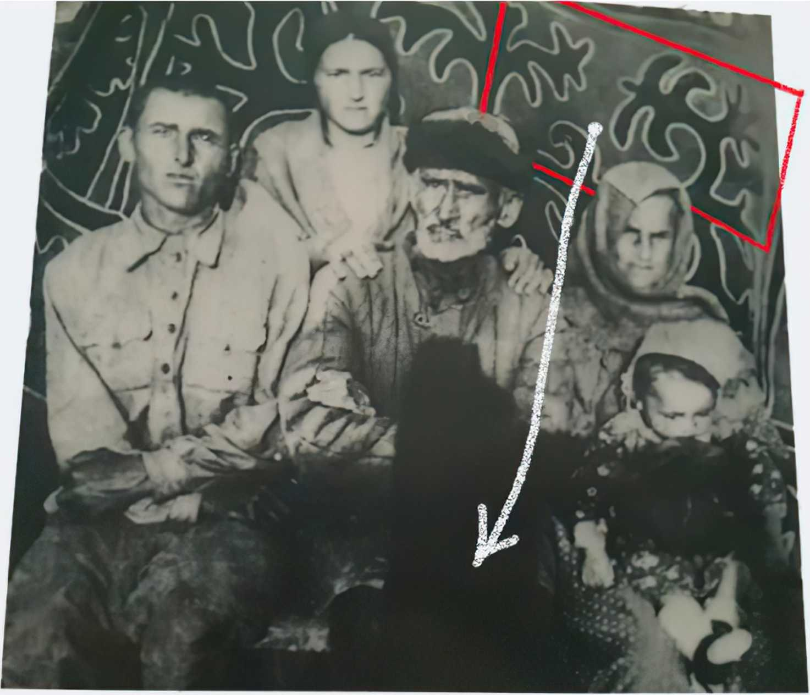
Газиков Лорс, жена Пятимат, сын Джабраил, сноха Тамара и внучка Хади. 1951—1952 гг.
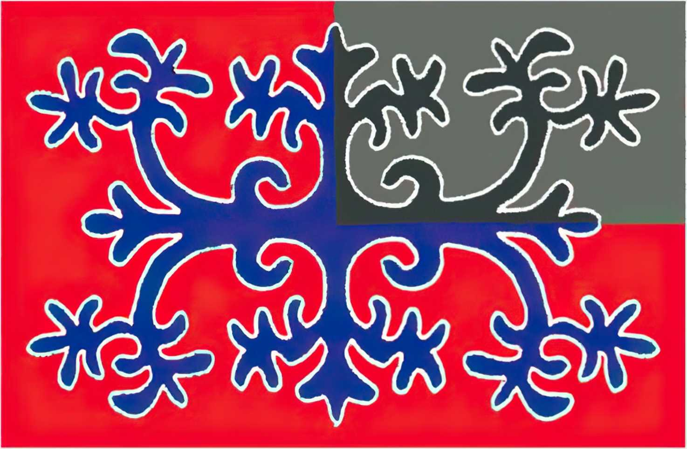
|
İkinci çalışmamız yine sanal bir ortamdan yararlanılarak oluşturulmuştur. Ramzan AMPUKAEV'e ait 03.01.2015 tarihli bir Facebook gönderisinde, Alihan DABAEV’in Varşova’daki ofisinde 2002 yılında çekilen bir fotoğrafın fonunda yer alan ve alt yazısında Çeçenya’daki köyü olan Çeçenaul’dan getirildiği belirtilen bir isting renk ve biçim olarak aslına sadık kalınarak yeniden çizilmiştir. |
Наше второе исследование было создано с использованием виртуальной среды. В сообщении Рамзана АМПУКАЕВА от 03.01.2015 в Facebook, изображение соответствует своему оригиналу по цвету и форме, что находится на заднем плане фотографии, сделанной в офисе Алихана ДАБАЕВА в Варшаве в 2002 году, и его подпись, как утверждается, привезена из Чеченаула, его села в Чечне. Он был перерисован толстым. |
|
Böylece herhangi bir kaynakta yer almayan bu eser sanal ortamın yardımıyla konuyla ilgili araştırmacıların dikkatine sunulmuştur. |
Таким образом, эта работа, не вошедшая ни в один ресурс, была доведена до сведения исследователей по данной теме с помощью виртуальной среды. |
|
Bu tür, tali kaynakların incelenmesi sonucunda yeniden elde edilen motiflere dair sonuncu çalışmamız çok eski bir fotoğraftan elde ettiğimiz istisnai bir örnektir. |
Наше последнее исследование мотивов, восстановленных в результате изучения таких вторичных источников, является исключительным примером, который мы получили из очень старой фотографии. |
|
Çalışmamıza konu olan doküman Doç.Dr. Oğuz KUTLU’nun kişisel albümünden alınan ve tahmini olarak 1955 yılına ait Çardak’ta çekilmiş bir fotoğraftır. |
Документ, являющийся предметом нашего исследования, — доц. Это фотография из личного альбома Огуза КУТЛУ, сделанная в Чардаке в 1955 году. |
|
Fotoğrafta bir evin balkonunda ön planda kucaklarında birisi (Şaziye KUTLU) bebek, diğeri küçük bir kız çocuğu tutan iki genç kadın görülmektedir. Fotoğrafın bizim için en önem taşıyan ayrıntısı ise dikkatlice bakıldığında annesinin kucağında balkon korkuluğu üzerinde ayakta duran kız çocuğunun başının üzerinde görülen şekildir. Buna göre evin balkona açılan penceresinin üzerine eski bir çeçen dekarasyon geleneği olarak o yıllarda çeşitli motiflerin (bustumuş) hala çizildiği görülmektedir. Sadece bir yarısı görülen motifin diğer yarısı ile birlikte çizimi tahmini renkleriyle fotoğrafta (küçük resim) ilgilerin dikkatine ilk kez sunulmaktadır. Bilindiği üzere, yakın zamanlara kadar eski bir adet olarak Çeçen evlerinde (özellikle beyaz sıvalı duvarlardaki pencere çevresine) bu tür motifler süsleme olarak yapılmaktaydı. |
На фотографии две молодые женщины видны на балконе дома на переднем плане, одна держит ребенка (Шазийе КУТЛУ), а другая — маленькую девочку. Самая важная деталь фотографии для нас — это фигура над головой девушки, стоящей на перилах балкона на коленях матери, если внимательно присмотреться. Соответственно, видно, что различные мотивы (надутые) по-прежнему рисовались на окне дома, выходящем на балкон, как старая чеченская традиция украшения. Впервые рисунок, на котором видна только одна половина рисунка вместе с другой половиной, представляется вниманию интересующихся фотографией (маленькой картинкой) с предполагаемыми цветами. Как известно, до недавнего времени такие мотивы использовались в качестве украшения в чеченских домах (особенно вокруг окон на белых оштукатуренных стенах) как давняя традиция. |
|
Bu sayfada verdiğimiz İsting çizimleri de farklı basılı olmayan kaynaklardan derlenerek değerlendirilmiş el sanatı örnekleri arasındadır |
Рисунки Истинга, которые мы приводим на этой странице, относятся к числу примеров ручной работы, которые были собраны из разных непечатных источников. |
|
Yan tarafta çizimlerini verdiğimiz örneklerden birincisi; Çeçenya'dan 1890lı yıllarda Ürdün'e götürülmüş eski bir isting örneğidir. Bir şans sonucu elimize ulaşan eski ve silik bir fotoğraftan alınmıştır. Çizim tonal değerlerine bakılarak tahmini olarak renklendirilm-iştirikinci ve üçüncü örnekler ise, yine sanal ortamlardan alıp derlediğimiz bazı fotoğraflardan yararlanılarak yeniden çizilmiş ve orjinal renklerine bağlı kalınmıştır. |
В первом из примеров мы привели рисунки сбоку; Это старинный образец, который в 1890-х годах перевезли из Чечни в Иорданию. Это было сделано со старой, блеклой фотографии, которую мы получили случайно. Второй и третий примеры были перерисованы с использованием некоторых фотографий, которые мы собрали из виртуальных сред, с сохранением исходных цветов. |
|
Çeçen-İnguş Hakinin son iki yüz yıl içinde yaşadığı travmatik olaylar nedeniyle el sanatlarının yeterince gelişme ve ilerleme gösteremeden sadece kısıtlı imkanlarla varlığını sürdürdüğünü ileri sürmek mümkündür. Özellikle Çeçenya'da yaşayan ana kitlenin 1944'de yaşadığı Sibirya sürgünü sırasında bir çok kültürel değerini de yitirmiş olması, günümüze bu tür el sanatlarının çok az ulaşmasının başlıca nedenini oluşturur. Bu açıdan bakıldığında konumuzu oluşturan Çeçen Bustumları da bir anlamda yitik el sanatı motiflerimizdir. Bu değerlerin üzerinde çalışılarak tekrar bilgi dünyasına kazandırılıp layık oldukları önemin insanlarımıza hatırlatılması, geçmişte yaşanan büyük yıkımların sonucunda oluşan kültürel yaraların sarılması yönünde de bir küçük çaba sayılabilir. |
В связи с травматическими событиями, которые пережил чечено-ингушский народ за последние двести лет, можно утверждать, что ремесла выживали лишь при ограниченных средствах, без достаточного развития и прогресса. Тот факт, что основная часть населения, проживавшая в Чечне, потеряла большую культурную ценность во время сибирской ссылки в 1944 году, является основной причиной того, что такие ремесла редко дошли до наших дней. С этой точки зрения, чеченские бустумы, которые составляют нашу тему, в некотором смысле являются нашими утраченными мотивами ремесленничества. Работа над этими ценностями и возвращение их в мир знаний и напоминание нашим людям о важности, которую они заслуживают, также можно рассматривать как небольшую попытку залечить культурные раны, нанесенные в результате великих разрушений в прошлом. |
BİR BÜSTÜM TASARLAMAK |
ДИЗАЙН БЮСТУМА |
|
Çeçen bustumlarının biçimsel anlamda genel özelliklerinin başıda “köşeli hatların” hemen hiç olmayışı gelir. Nerede ise tamamının kıvrık ve yumuşak hatlı simetrik çeşitlemelerle yapılmış olmaları” çizimin tasarımı açısından büyük bir kolaylık oluşturur. Gerçekte tüm Kafkas toplumlarının da motiflerinde de temel bir eğilim olan bu durum, motif tasarlayan kişilerin tercihinden kaynaklanarak çok çeşitli türleri olan simetrik biçimlere dönüşür. Motiflerde sıkça “aynalı” ve “dörtlü” simetri çeşitlemeleri kullanılmıştır. |
Одна из общих черт чеченских бюстумов по форме — отсутствие «угловатых линий». Практически все они выполнены с изогнутыми и плавными линиями, симметричные вариации создают большое удобство с точки зрения оформления рисунка. Фактически, эта ситуация, которая является основной тенденцией в мотивах всех кавказских обществ, превращается в симметричные формы с разными типами из-за предпочтений людей, которые создают мотив. В мотивах часто используются «зеркальная» и «четверная» вариации симметрии. |
|
AYNALI SİMETRİ: İnsanlığın ilk çağlarından beri, görsel beğenide “bir uyumluluk anlayışının ve arayışının” sonucu olarak ilk keşfedilen ve sıkça kullanılan simetri örneğidir. Buna göre; |
ЗЕРКАЛЬНАЯ СИММЕТРИЯ: это первый пример симметрии, обнаруженный и часто используемый в результате «понимания и поиска гармонии» в визуальном вкусе с ранних веков человечества. Согласно этому; |
|
Herhangi bir şekilin biçimsel değişime uğramadan sadece yönü değiştirilerek çoğaltılması “aynalı” simetrinin temel görünümünü oluşturur. Tüm dünyada el sanatlarının tekrara dayalı çoğaltılmış motif düzenlerinin de temelidir. Aynı zamanda bu simetri ile şekiller bir bütünün parçası olarak aynı eksen üzerinde birleşmiş ve iki yöne dönük olarak sonsuz sayıda tasarlanabilmektedir, (altta ve yandaki örneklerde olduğu gibi) |
Основной взгляд на «зеркальную» симметрию — это воспроизведение любой формы без каких-либо формальных изменений, только путем изменения ее направления. Это также основа повторяющихся узоров в изделиях ручной работы во всем мире. В то же время, с этой симметрией, можно создавать бесконечное количество фигур как части целого, объединенные на одной оси и повернутые в двух направлениях (как в примерах ниже и сбоку). |
|
DÖRTLÜ SİMETRİ : Dörtlü simetri diğer simetri çeşitlerine göre daha komplike bir yapıdadır. Dört farklı yöne uzanan “aynı biçimin” merkezde veya göbekte birleşmesiyle oluşturulur. Bu tür motifler (bustumuş) genellikle, ortadan dörde katlanmış bir kalıbın üzerine önce çizilip, sonra kesilerek kalıbın açılmasıyla oluşturulur. Dörtlü katman kalıp üzerine çizim yapan kişinin becerisine bağlı olarak sonsuz sayıda motif çeşitlemesi ortaya çıkabilmektedir. Yapılışının basitliğine karşın çizimde hatları oluşturan dal, çiçek, yaprak, boynuz vb gibi biçimsel öğelerin bir bütünü oluşturacak şekilde tasarlanması gerekir. Bu tasarım ise toplumsal beğeniler sonucunda şekillenecektir. Diğer bir ifade ile tasarlanan motifler aynı zamanda toplumdan topluma farklılık gösteren biçimsel ayrıntılara sahip olacaktır. Genel anlamıyla motif üretimi ya da motif çeşitleri toplumların biçimsel beğenilerine göre değişen bir çeşitliliğe sahip olacaktır. |
ЧЕТЫРЕ СИММЕТРИИ : Четверная симметрия сложнее, чем другие типы симметрии. Он создается путем соединения «той же формы», простирающейся в четырех разных направлениях в центре или в ядре. Такие мотивы (пышные) обычно создаются путем сначала рисования на форме, которая складывается пополам посередине, а затем вырезания ее, чтобы открыть форму. В зависимости от навыков человека, рисующего четырехслойный узор, может возникнуть бесконечное количество вариаций мотива. Несмотря на простоту конструкции, формальные элементы, такие как ветви, цветы, листья, рога и т. Д., Образующие линии на чертеже, должны быть спроектированы так, чтобы образовывать единое целое. Этот дизайн будет сформирован с учетом социальных предпочтений. Другими словами, разработанные мотивы также будут иметь формальные детали, которые различаются от общества к обществу. В общем, производство мотивов или типы мотивов будут иметь разнообразие, которое меняется в зависимости от формальных вкусов общества. |
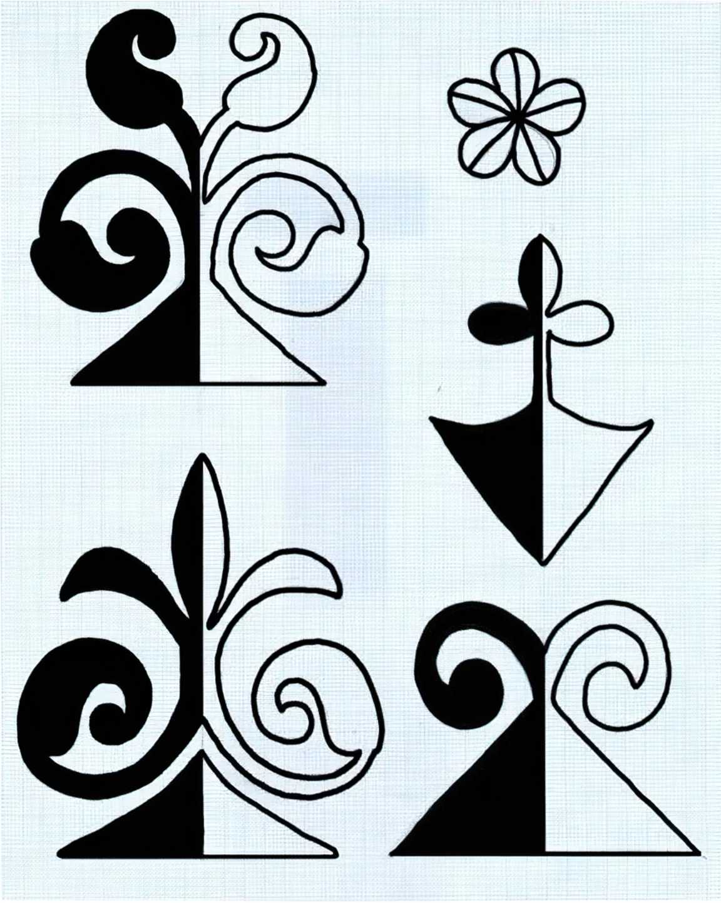
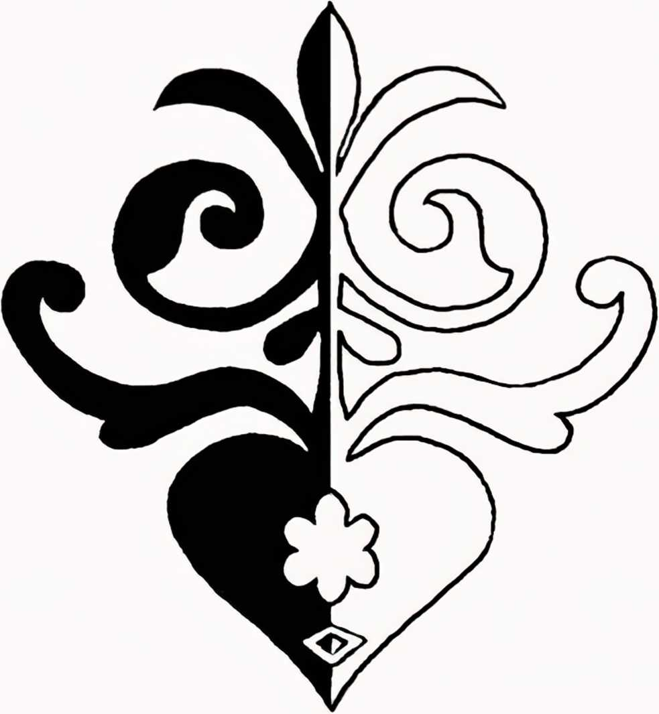
|
Halk kültürü çalışmaları sonucu elde edilen ve aynalı simetri kullanılarak yapılmış kafkas kadın giysilerinde kullanılmış çeşitli motif örnekleri. (Kaynak; E. Yıldır / Doğu Akdeniz Bölgesi saha araştırmaları / 2004) |
Различные мотивы в одежде кавказских женщин выполнены с зеркальной симметрией и получены в результате исследований народной культуры. (Источник; Э. Йылдыр / Полевые исследования региона Восточного Средиземноморья / 2004 г.) |
|
Simetrik çeşitlemelerden oluşan Çeçen motiflerinin temel çıkış noktası bir çok toplumda olduğu gibi tabiat ve görsel çevredir. Bunun sonucu bazı özellikler bütün motiflerde görsel çevreden edinilen izlenimler ortak noktalar olarak karşımıza çıkar. Bazı motifler hayvan, bazı motifler bitki, bazı motifler ise insan simgeleri halinde ve daha çok nonfigüratif anlayışla yapılmıştır. |
Основная отправная точка чеченских мотивов, состоящих из симметричных вариаций, — это природа и визуальная среда, как и во многих обществах. В результате некоторые черты становятся общими точками во всех мотивах, впечатлениях от визуальной среды. Некоторые мотивы являются животными, некоторые — растительными, некоторые мотивы созданы как человеческие символы и в основном с нефигуративным подходом. |
|
Özellikle hayvan boynuzlarından esinlenerek yapılmış motiflerdeki biçimsel anlayış veya çeşitli simetrik sipirallerden oluşan yayğın çeşitlemeli çizim-lerin ilkel dönemlerden kaldığı anlaşılmaktadır. Günümüzde yapılış amaçları tamamen unutulmuş ama bir alışkanlık olarak çizilen biçimsel öğelerde bir çok tabiat olayı çeşitli anlamlarla yüklü mitolojik semboller halinde motiflere dönüştürülmüştür. Mitolojik semboller halindeki motifler tek tanrılı dine geçişle birlikte eski mana ve önemini yitirerek görsel bir beğeni sonucu yapılan süsleme unsurlarına dönüşmüştür. Tarih öncesinden günümüze bu saydığımız ortak özellikleri koruyarak ulaşan Çeçen motifleri bazı kültürel etkileşimlerle konularını daha çeşitli hale getirmiştir. Örnek verecek olursak 8.yy’dan ı8.yy.’a uzanan bin yıllık İslamlaşma süreci ile birlikte hilal-yıldız motifi daha yaygın olarak kullanılmaya başlamıştır. |
Подразумевается, что формальное понимание мотивов, вдохновленных рогами животных, или вариационных рисунков разворота, состоящих из различных симметричных спиралей, относится к примитивным периодам. Сегодня их предназначение полностью забыто, но в формальных элементах, нарисованных по привычке, многие природные явления были преобразованы в мотивы в виде мифологических символов, наполненных различными значениями. Мотивы в виде мифологических символов утратили свой прежний смысл и значение с переходом к монотеистической религии и превратились в декоративные элементы, созданные в результате визуального вкуса. Чеченские мотивы, дошедшие до наших дней, сохранив эти общие черты, сделали свои сюжеты более разнообразными за счет некоторых культурных взаимодействий. Например, с тысячелетним процессом исламизации с 8 по 18 века мотив полумесяца и звезды стал использоваться более широко. |
|
Motiflerin renklendirilmesinde kontrast (zıt) renkler bir arada kullanılarak yüzeylere canlı ve dikkat çekici bir anlatım kazandırılmıştır. |
В окраске мотивов используются контрастные цвета, чтобы придать поверхности живость и выразительность. |
|
..... |
..... |
|
Burada, tüm bu anlatım ve tasniflerin ışığında Çeçen motiflerini -tıpkı eskilerin yaptığı şekildebir anlamda sonsuz sayıda rastlantısal sonuçlara ulaşmayı da göze alarak yeniden tasarladığımız çalışmaların ortaya çıkan sonuçlarından yaptığımız bir seçmeyi toplumsal beğenilerimize sunuyoruz. |
Здесь, в свете всех этих выражений и классификаций, мы представляем нашим социальным вкусам выбор, который мы сделали из результатов работ, которые мы переработали, рискуя получить бесконечные случайные результаты, как это делали древние. |
|
Ümid ediyoruz ki; bu katalogda verilen yeniden oluşturulmuş birçok motif genel anlamıyla “Çeçen Bustumları” tasnifi içinde rahatlıkla değerlendirilebilecektir. |
Мы надеемся на это; Многие из реконструированных мотивов, представленных в этом каталоге, легко оцениваются в общем смысле «чеченских бюстумов». |
|
(TASARIMLAR : Doç Erol YILDIR / İstanbul 2014) |
(ДИЗАЙНЫ: Assoc Erol YILDIR / Стамбул, 2014 г.) |
TASARLANMIŞ BÜSTÜM ÖRNEKLERİ |
РАЗРАБОТАННЫЕ ОБРАЗЦЫ БЮСТУМА |
|
Burada verilen Çeçen motiflerinin kullanımı serbesttir. Herhangi bir telife tabi değildir: |
Использование представленных здесь чеченских мотивов бесплатное. Не подлежит никаким претензиям: |